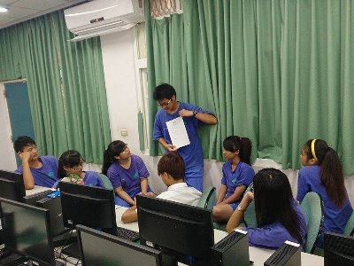
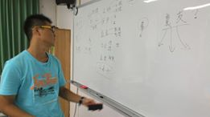
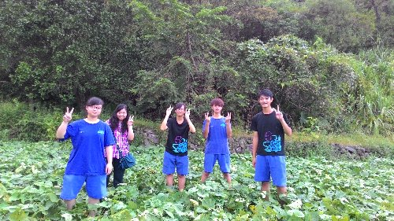
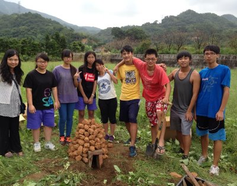
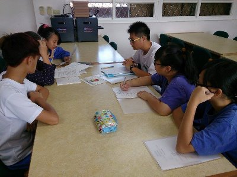
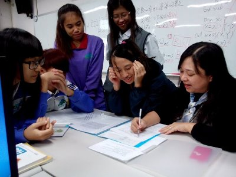
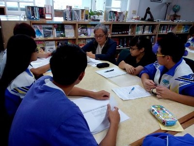
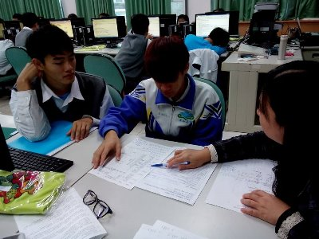

FIELD JOURNAL / 2015 專題紀錄
把一起努力的日子，一頁頁留下。
依原專題工作日誌閱讀會議、實作與資料整理的紀錄，保留每次出席與完成任務。
時間：103/09/04
召集人：林紀揚
出席同學：林紀揚、游博文、李囿蓉、林姿褎、陳佩茹、張林、錢佳瑩、廖怡珍
完成任務：
1.確定任務分配（紀錄、攝影）
2.組員聯絡感情


時間：103/09/16
召集人：林紀揚
出席同學：林紀揚、游博文、李囿蓉、林姿褎
完成任務：
討論網站可以呈現哪些內容，以及焢窯當天要注意與拍攝的重點：口感（紅、黃、紫地瓜與馬鈴薯的差異）、外觀、焢窯過程、歷史、盛產的氣候、活動（如甘藷節）、對身體的益處、問與答、為何金山最有名、土壤（砂質）、地瓜生長過程、心得。


時間：103/09/24
召集人：林紀揚
出席同學：林紀揚、游博文、李囿蓉、林姿褎、陳佩茹
完成任務：
1. 了解如何挖地瓜（農民一般用機器，我們改用鋤頭，雖然比較累，但更有實際體驗的感覺）
2. 拍攝地瓜田、參加人員合照、地瓜特寫與挖地瓜的個人照


時間：103/10/05
召集人：華欣老師
出席同學：林紀揚、李囿蓉、林姿褎、陳佩茹、張林、錢佳瑩、華欣老師
完成任務：
完成焢窯過程


時間：103/11/05
召集人：林紀揚
出席同學：林紀揚、李囿蓉、游博文、林姿褎、陳佩茹、張林、鳳英老師
完成任務：
1. 整理地瓜的歷史與由來（發源地、來歷、影響），編寫成文
2. 修改專題敘述與地方敘述


時間：103/11/12
召集人：華欣老師
出席同學：林紀揚、李囿蓉、游博文、林姿褎、陳佩茹、華欣老師
完成任務：
討論專題的網頁製作（排版、網頁格式、呈現方式）

時間：103/11/18
召集人：華欣老師
出席同學：林紀揚、游博文、李囿蓉、陳佩茹、華欣老師
完成任務：
討論訪問的問題（農家、農會相關人員等問題）

時間：103/11/18
召集人：華欣老師
出席同學：李囿蓉、華欣老師
完成任務：
1. 討論研究動機、研究方法與設計
2. 修改訪問農友的問題，使之口語、流暢

時間：103/11/20
召集人：華欣老師
出席同學：林紀揚、游博文、李囿蓉、林姿褎、陳佩茹、張林、錢佳瑩、廖怡珍、華欣老師
完成任務：
1. 第二階段分組（網頁、美工、文字）
2. 修改文字，使之流暢、口語化


時間：103/11/26
召集人：華欣老師
出席同學：林紀揚、游博文、李囿蓉、林姿褎、陳佩茹、張林、錢佳瑩、廖怡珍、華欣老師
完成任務：
討論研究架構，進一步了解如何讓內容更完整

時間：103/11/26
召集人：林紀揚
出席同學：林紀揚、游博文、林姿褎、李囿蓉、陳佩茹、鳳英老師
完成任務：
討論資料蒐集該從哪裡著手，才能讓地瓜的資訊更齊全（金山區公所）


時間：103/11/27
召集人：華欣老師
出席同學：游博文、李囿蓉、華欣老師
完成任務：
討論訪談店家的問題


時間：103/12/08
召集人：林紀揚
出席同學：林紀揚、李囿蓉、游博文、林姿褎、陳佩茹
完成任務：
1. 討論地瓜 DIY 實作與材料採買時間（地瓜披薩、蜜地瓜蛋糕捲）
2. 討論到老街訪問與拍攝地瓜產品的時間、地點（地瓜冰淇淋、拔絲地瓜、蔴粩）

時間：103/12/10
召集人：華欣老師
出席同學：林紀揚、游博文、林姿褎、李囿蓉、陳佩茹、張林、錢佳瑩、廖怡珍、華欣老師
（從旁協助：美玲老師）
完成任務：
1. DIY 製作地瓜料理（地瓜披薩、地瓜蛋糕），實際了解製作過程
2. 老街訪問販售金山地瓜產品的店家（獅子林餅舖、阿嬤的ㄟ等路、獅子林蛋捲、藷童瑤、冰芝林、雪豹冰城、極蛋、阿玉蔴粩、蕃薯伯ㄟ勾勾纏、麻糬泡泡冰）

時間：103/12/13
召集人：林紀揚
出席同學：林紀揚、李囿蓉
完成任務：
走訪老街店家並拍攝取材

時間：103/12/26
召集人：李囿蓉
出席同學：李囿蓉
完成任務：
修改網頁排版
.jpg)
時間：103/12/29
召集人：陳佩茹
出席同學：陳佩茹
完成任務：
檢查錯字，確認句子是否通順
.jpg)
時間：104/01/05
召集人：游博文
出席同學：游博文
完成任務：
檢查句子是否通順、字體是否有誤
.jpg)
時間：104/01/08
召集人：華欣老師
出席同學： 游博文、華欣老師
完成任務：
老師指導同學如何讓頁面更好看
.jpg)
時間：104/01/13
召集人：林紀揚
出席同學： 林紀揚、游博文
完成任務：
討論網頁製作與文字內容
.jpg)
時間：104/01/17
召集人：李囿蓉
出席同學： 李囿蓉、林姿褎、陳佩茹
完成任務：
更正筆記內容的錯誤
.jpg)
時間：104/01/20
召集人：錢佳瑩
出席同學： 錢佳瑩
完成任務：
統整全部資料的文字
.jpg)
時間：104/01/23
召集人：張林
出席同學： 張林
完成任務：
繪製插圖
.jpg)
時間：104/01/28
召集人：廖怡珍
出席同學： 廖怡珍
完成任務：
調整插圖，呈現最好的效果
.jpg)
時間：104/01/31
召集人：錢佳瑩
出席同學： 錢佳瑩
完成任務：
製作甘藷的美工圖
.jpg)
時間：104/02/02
召集人：張林
出席同學：張林、廖怡珍、錢佳瑩
完成任務：
討論美工繪圖的問題
.jpg)
時間：104/02/05
召集人：華欣老師
出席同學： 林紀揚、李囿蓉、華欣老師
完成任務：
討論網頁製作的內容
.jpg)
時間：104/02/09
召集人：華欣老師
出席同學： 林紀揚、游博文、李囿蓉、陳佩茹、林姿褎、張林、錢佳瑩、廖怡珍、華欣老師
完成任務：
寒假到校進行最後的收尾工作
.jpg)
時間：104/02/24
召集人：華欣老師
出席同學：林紀揚、游博文、李囿蓉、林姿褎、陳佩茹
完成任務：
完成了！一起欣賞大家合力完成的作品
.jpg)